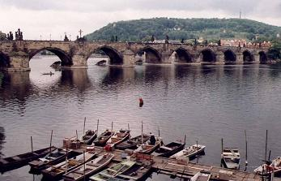
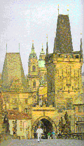
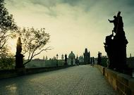

LE PONT CHARLES
Trois fortins blasonnés que lie une oraison
Où la flamme captée en la pierre et l'emphase,
D'ardoise couronnée et de gestes, s'embrase
En envols contournés qui se prennent - prison
Si ne la continue une neuve raison
Car l'or qui germera s'apprête sous la vase
Et le chant doit au marbre ajouter son extase
Pour qu'au champ du savoir règne la fenaison.
Jet qui scandé de cris unit la plaine au mont,
Il laisse à l'arc voûté se crisper le démon
Livrant comme un lambeau son image au limon,
Et penché sur ces eaux où gît son âme morte,
Je me perds, incertain si je suis pont ou porte,
Dédiant mon reflet au fleuve qui l'emporte.
Michel Galiana (c) 2005

CHARLES BRIDGE
Three forts adorned with arms linked by a rosary
Where fervour was captured in stone and in pageant,
Were a jail roofed with slate and with epic legend
That in twisted soarings flared up - a cemetery
If it were not prolonged by a new reasoning
For gold waits in the mud and is to sprout ready
And song and marble must mingle their ecstasy
To make meads of knowledge thrive for the haymaking.
This is a cry-scanned arch uniting high and low,
Where intent demons strive to bend the vaulted bow
To be better mirrored, torn to shreds, in the silt,
And leaning o'er the stream where lies this dead shadow,
I am lost, wondering if I am gate or bridge
And leave my reflection for the river to shift.
Transl. Christian Souchon (c) 2005
Note :
Le Pont Charles qui enjambe la Moldau combine l'architecture gothique et la
sculpture baroque.
C'est l'Empereur romain germanique et Roi de Bohème Charles IV qui commença
sa construction en 1357. L'ouvrage fut réalisé par l'architecte Pierre Parler.
Le pont de deux étages est décoré de sculptures représentant l'Empereur, son fils
Venceslas et Saint Guy.
Deux rangées de statues baroques furent ajoutées au cours du 18 ième siècle.
Le pont a 516 m de long et 9,5 m de large.
|
The Charles Bridge, which arches over the river Vltava combines Gothic
architecture and Baroque sculpture.
Roman Emperor and Czech King Charles IV (Karel IV) started the bridge in 1357.
The work was completed by the architect Petr Parler.
The two-story bridge tower is decorated with sculptures of the Emperor, his
son Wenceslas and Saint Vitus.
Rows of Baroque statues were added during the 18th century.
The bridge is 516 meters long and 9 and a half meters wide.
|
Listen to "Charles Bridge" in English
